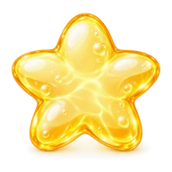

Everything blooms!
Hepsi çiçek açtı!
Every flower got its water.
Her çiçek suyunu aldı.
Your turn. Water every flower.
Sıra sende. Her çiçeği sula.
Tap a pipe to turn it a quarter. Connect the tap on the left to every flower with an unbroken line and watch the water run. Every puzzle here is freshly made.
Bir boruya dokunup çeyrek tur çevir. Soldaki musluğu her çiçeğe kesintisiz bir hatla bağla ve suyun akışını izle. Buradaki her bulmaca anında yeniden üretilir.
Fresh mechanics keep every world surprising.
Yeni mekanikler her dünyayı sürprizli tutar.
These are the real pieces from the game, with the game's own explanations. Tap one.
Bunlar oyundaki gerçek parçalar ve oyunun kendi açıklamaları. Birine dokun.
Extra tapYeni musluk
There are several taps and each waters the flowers of its own colour. Send each flower its own colour.
Birden çok musluk var; her musluğun kendi renkli çiçekleri var. Çiçeğe kendi renginin suyunu ulaştır.
Tap the pictureÇizime dokun
Two-colour flowerÇift renkli çiçek
This flower needs the water of two taps. Both colours must reach it.
Bu çiçek iki musluğun suyunu birden ister. İki rengin suyu da ona ulaşsın.
Tap the pictureÇizime dokun
Locked pipesKilitli borular
Locked pipes cannot be rotated. Plan around them.
Kilitli borular döndürülemez. Çevresini ona göre ayarla.
Tap the pictureÇizime dokun
RocksKayalar
Pipes cannot go through rocks. Guide the water around them.
Kayaların içinden boru geçmez. Suyu kayaların etrafından dolaştır.
Tap the pictureÇizime dokun
Frozen pipesBuzlu borular
Frozen pipes cannot be turned. Each ice and one flower share a sun badge of the same colour, joined by a coloured line. When that flower blooms, heat flows along the line and the ice melts.
Buzlu borular donuktur, döndürülemez. Her buzun köşesinde ve bir çiçeğin üstünde aynı renkte güneş rozeti var; renkli çizgi onları bağlar. O çiçek açınca ısı çizgiden akar ve buz erir.
Tap the pictureÇizime dokun
One-way valveTek yönlü vana
Water passes a valve only in the arrow direction. Connect the tap on the right side.
Vanadan su yalnız okun gösterdiği yönde geçer. Musluğu doğru tarafa bağla.
Tap the pictureÇizime dokun
Linked pipesBağlı borular
Two pipes with matching rings are linked: turning one turns the other.
Mor halkalı iki boru birbirine bağlı: birini çevirince diğeri de döner.
Tap the pictureÇizime dokun
Worn pipesEskimiş borular
Worn pipes can only be turned a few times; the dots show how many turns are left. Turn carefully.
Eskimiş borular en çok birkaç kez döner; altındaki noktalar kalan hakkı gösterir. Hak bitince boru donar, dikkatli çevir.
Tap the pictureÇizime dokun
PumpPompa
A pump takes water from behind and throws it over the next cell. Tap to turn it.
Pompa suyu gerisinden alır, önündeki hücrenin üstünden atlatıp ötesine verir. Dokununca döner.
Tap the pictureÇizime dokun
CactusKaktüs
Cacti hate water! If the open end of a wet pipe points at a cactus, it gets watered and the level cannot finish. Turn the pipes so none of them sprays a cactus.
Kaktüs suyu sevmez! Islak bir borunun ucu kaktüse bakarsa kaktüs sulanır ve bölüm tamamlanmaz. Boruları kaktüsü sulamayacak şekilde çevir.
Tap the pictureÇizime dokun
SwapTakas
Tap the arrow badge between two pipes to swap their places, so each shape ends up where it belongs.
İki borunun arasındaki oklu işarete dokununca iki boru yer değiştirir. Doğru şekil doğru yere gelsin.
Tap the pictureÇizime dokun
WheelÇark
The four pipes around a wheel (orange dots) cannot be turned one by one; they only turn together when you tap the wheel. Turn it the right number of times.
Çarkın çevresindeki dört boru (turuncu noktalı) tek tek çevrilemez; yalnız çarka dokununca birlikte döner. Çarkı doğru sayıda çevir.
Tap the pictureÇizime dokun
Bridge pipeKöprü borusu
Water goes straight across a bridge pipe: the two paths never mix.
Çapraz boruda su düz geçer: iki yol birbirine karışmaz, komşu borudan karşı tarafa atlar.
Tap the pictureÇizime dokun

TeleporterIşınlayıcı
Two teleporters of the same colour are linked: water reaching one starts flowing from the other.
Aynı renkli iki ışınlayıcı bağlı: birine su gelince diğerinden akmaya başlar.
Tap the pictureÇizime dokun
Every flower is thirsty in its own way.
Her çiçeğin susuzluğu kendine göre.
Extra taps water flowers of their own color, and some flowers need two taps at once. Tap a flower to wake it up.
Ek musluklar kendi renklerindeki çiçekleri sular, bazı çiçekler ise iki musluğa birden ihtiyaç duyar. Bir çiçeğe dokun, uyansın.
50 refreshing worlds to dive into.
Dalacak 50 ferahlatıcı dünya.
Droplet Garden, Flower Brook, Waterfall Cave, Rainbow Pool, Crystal Lake, Coral Reef and many more, each with its own aqua-glass backdrop straight from the game.
Damla Bahçesi, Çiçek Deresi, Şelale Mağarası, Gökkuşağı Havuzu, Kristal Göl, Mercan Resifi ve çok daha fazlası; her birinin oyundan gelen kendi su camı arka planı var.
Glassy, bubbly and very calm.
Camsı, kabarcıklı ve çok sakin.
The first 20 levels have no limits at all. Boss levels bring a time limit and a move limit together. Stuck? A hint keeps the water flowing.
İlk 20 bölümde hiçbir sınır yok. Patron bölümleri süre ve hamle sınırını bir arada getirir. Takıldın mı? Bir ipucu suyu akıtmaya devam ettirir.
No account. No personal data from us.
Hesap yok. Bizden kişisel veri yok.
Jelly Pipes keeps your progress on your own device. The only outside services are Google AdMob for the optional ads and Google Play for purchases.
Jelly Pipes ilerlemeni kendi cihazında tutar. Dışarıdaki tek hizmetler isteğe bağlı reklamlar için Google AdMob ve satın almalar için Google Play.
- No signup, no email, no phone number. The game never asks who you are.Kayıt yok, mail adresi yok, telefon numarası yok. Oyun kim olduğunu hiç sormaz.
- Levels, stars, gems and settings stay in the game's private storage on your device. Uninstall and they are gone.Bölümler, yıldızlar, elmaslar ve ayarlar cihazındaki oyunun özel alanında durur. Oyunu silince onlar da gider.
- Ads come from Google AdMob and are limited to content rated for teens. You can reset your advertising ID in your device settings.Reklamlar Google AdMob'dan gelir ve gençler için uygun içerikle sınırlıdır. Reklam kimliğini cihaz ayarlarından sıfırlayabilirsin.
- Gem packs are bought through Google Play. Your payment details never reach us.Elmas paketleri Google Play üzerinden alınır. Ödeme bilgilerin bize hiç ulaşmaz.
- No analytics and no crash reports are sent anywhere. The game does not touch your contacts, photos, camera, microphone or precise location.Hiçbir yere analiz ya da çökme raporu gönderilmez. Oyun rehberine, fotoğraflarına, kamerana, mikrofonuna ya da kesin konumuna dokunmaz.
Read the full policyPolitikanın tamamı
The privacy policy spells out exactly what is stored, what leaves the device and who handles it, in English and Turkish.
Gizlilik politikası neyin saklandığını, cihazdan neyin çıktığını ve kimin işlediğini tek tek yazar; İngilizce ve Türkçe.
Privacy policyGizlilik politikası →Almost on Google Play.
Neredeyse Google Play'de.
Jelly Pipes is in release preparation for Google Play. Want to know the day it lands, or have an idea for a new pipe? Write to us.
Jelly Pipes'in Google Play yayın hazırlığı sürüyor. Çıktığı günü öğrenmek ya da yeni bir boru için fikrin varsa bize yaz.